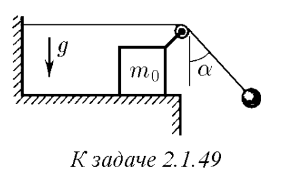

Условие:
$2.1.49^*.$ К свободному концу нити, прикрепленной к стенке и переброшенной через ролик, подвешен груз. Ролик закреплен на бруске массы $m_0$, который может скользить по горизонтальной плоскости без трения. В начальный момент нить с грузом отклоняют от вертикали на угол $α$ и затем отпускают. Определите ускорение бруска, если угол, образованный нитью с вертикалью, не меняется при движении системы. Чему равна масса груза?

К задаче 2.1.49
Решение:
Силы действующие на систему
Применим второй закон Ньютона:
$$OX: \;T - T \sin \alpha = m_0 a_{0x} $$
$$ T \sin \alpha = m_{a1x} $$
$$OY: \;N - mg - T \cos \alpha = m_0 a_{0y} = 0 $$
$$ T \cos \alpha - mg = m_{a1y} $$
$$ \tan \alpha = \frac{x_0 - x_1}{y_0 - y_1} $$
Учитывая $\alpha = \text{const}$
$$
\frac{d}{dt} \left( \tan \alpha \right) = \frac{\left( \frac{dx_0}{dt} - \frac{dx_1}{dt} \right)(y_0 - y_1) - \left( \frac{dy_0}{dt} - \frac{dy_1}{dt} \right)(x_0 - x_1)}{(y_0 - y_1)^2} = 0
$$
$$
\frac{d}{dt} \left( \left( \frac{dx_0}{dt} - \frac{dx_1}{dt} \right)(y_0 - y_1) \right) = \frac{d}{dt} \left( \left( \frac{dy_0}{dt} - \frac{dy_1}{dt} \right)(x_0 - x_1) \right)
$$
$$
\left(\frac{d^{2}x_{0}}{dt^{2}}-\frac{d^{2}x_{1}}{dt^{2}}\right)(y_{0}-y_{1})+\left(\frac{dx_{0}}{dt}-\frac{dx_{1}}{dt}\right)\left(\frac{dy_{0}}{dt}-\frac{dy_{1}}{dt}\right)=$$
$$\left(\frac{d^{2}y_{0}}{dt^{2}}-\frac{d^{2}y_{1}}{dt^{2}}\right)(x_{0}-x_{1})+\left(\frac{dy_{0}}{dt}-\frac{dy_{1}}{dt}\right)\cdot\left(\frac{dx_{0}}{dt}-\frac{dx_{1}}{dt}\right)
$$
$$
(a_{0x} - a_{1x})(y_0 - y_1) = (a_{0y} - a_{1y})(x_0 - x_1)
$$
$$ \tan \alpha (a_{0y} - a_{1y}) = a_{0x} - a_{1x}$$
Из (1)
$$a_{0y} = 0$$
$$ -\tan \alpha\, a_{1y} = a_{0x} - a_{1x} $$
Длина веревки:
$$ L = x_w - x_0 + \frac{y_0 - y_1}{\cos \alpha} $$
Т.к. нить нерастяжима
$$ \frac{d^2 L}{dt^2} = -\frac{d^2 x_0}{dt^2} + \frac{1}{\cos \alpha} \left( \frac{d^2 y_0}{dt^2} - \frac{d^2 y_1}{dt^2} \right) = 0 $$
$$ \left( \frac{d^2 x_0}{dt^2} = a_{0x}, \frac{d^2 y_0}{dt^2} = a_{0y}, \frac{d^2 y_1}{dt^2} = a_{1y} \right) $$
$$ a_{0x} \cdot \cos \alpha = a_{0y} - a_{1y}$$
Из $(1)$: $a_{0y} = 0$
$$ a_{0x} \cos \alpha = -a_{1y} $$
Разделив уравнения из (1):
$$ \frac{T \sin \alpha}{T \cos \alpha} = \frac{m a_{1x}}{m (g + a_{1y})} \to \tan \alpha (g + a_{1y}) = a_{1x} $$
$$ \tan \alpha a_{1y} = a_{1x} - g \tan \alpha$$
и используя (4)
$$\boxed{a_{0x} = g \tan \alpha }$$
Разделив уравнения из (1):
$$
\frac{T(1 - \sin \alpha)}{T \cos \alpha} = \frac{M}{m} \cdot \frac{a_{0x}}{g + a_{1y}}$$
Обратите внимание, что:
$$a_{1y} = -g \sin \alpha$$
$$ \frac{1 - \sin \alpha}{\cos \alpha} \frac{M}{m} = \frac{g \tan \alpha}{g - g \sin \alpha} \to m = \frac{M \sin \alpha}{(1 - \sin \alpha)^2} $$
$$ \boxed{m = \frac{M \sin \alpha}{(1 - \sin \alpha)^2}} $$
physicshub
Ответ:
$$a = g \tan α$$
$$m = m_0 \frac{sin α}{(1 − sin α)^2}$$
Альтернативное решение:
VIDEO
© Решебник Савченко О.Я. , 2023-2024
Все права принадлежат авторам.